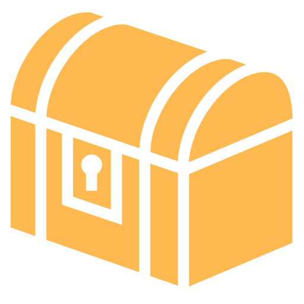
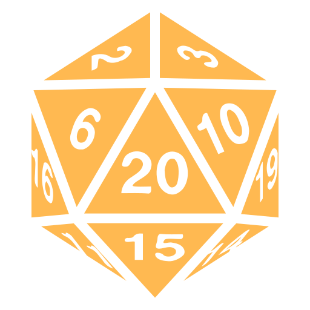

Brian Feeney · Riot GamesSame Problem, New AnswersBrian Feeney’s magic items against five D&D problems, and the whole sheet of 352 itemsOpen →
At the tableMore D&DTurns, dice and tools: one turn told as dice and as a table, Advantage as math, and roll simulatorsThe Ogre Turn →